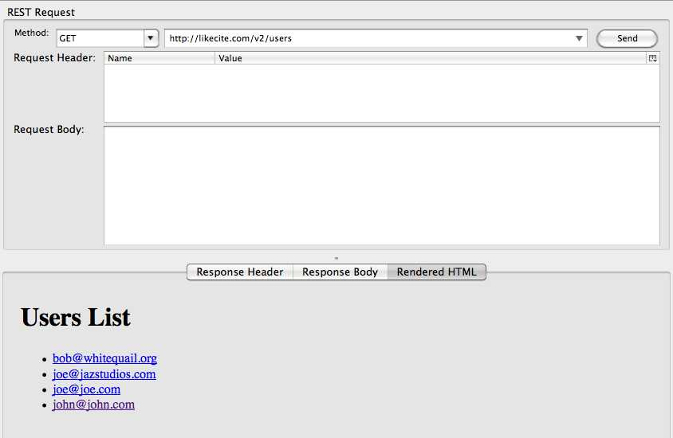
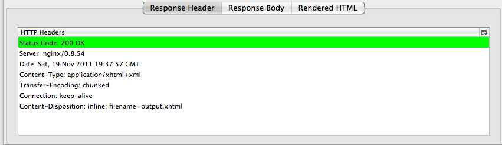
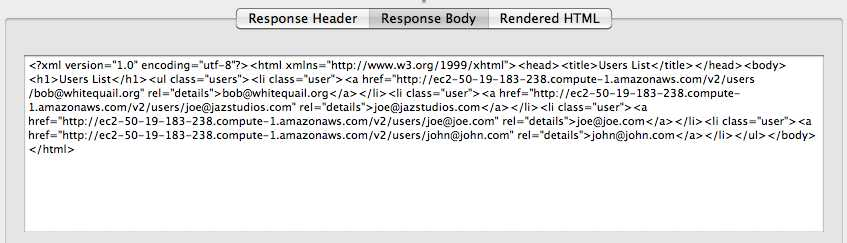
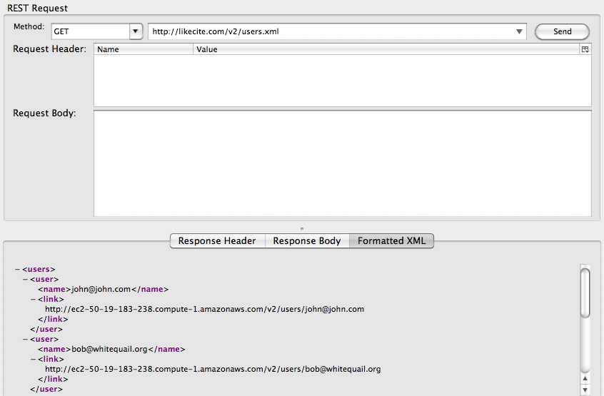
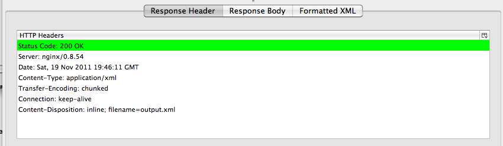
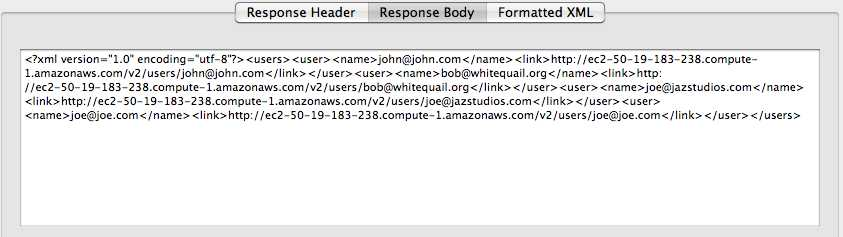
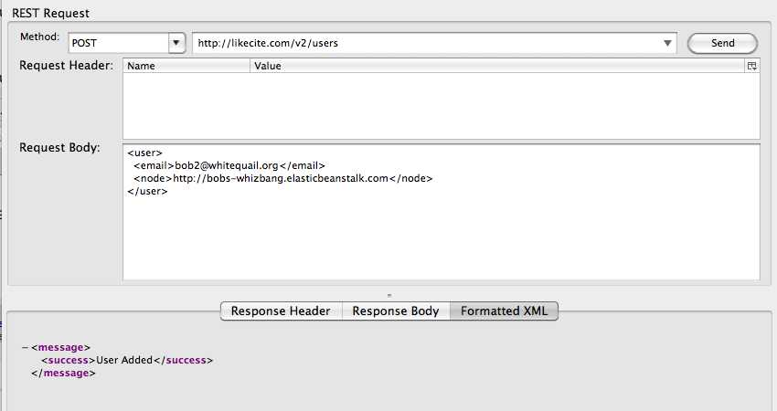
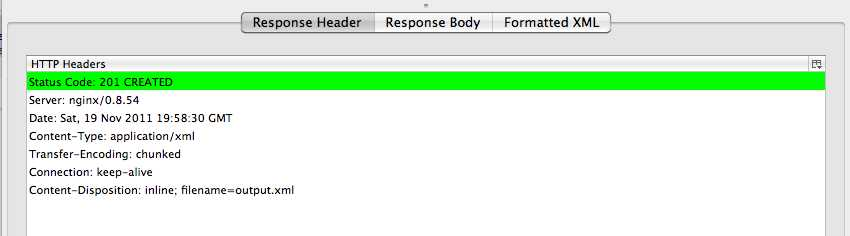
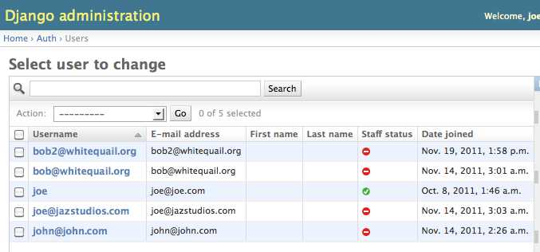

When preforming a GET to this url endpiont, a list of users is displayed. By default, they are represented in an xhtml format.
Usage Example:



Here is an example of the xhtml format that is returned after "pretty printing".
<?xml version="1.0" encoding="utf-8"?>
<html xmlns="http://www.w3.org/1999/xhtml">
<head>
<title>Users List</title>
</head>
<body>
<h1>Users List</h1>
<ul class="users">
<li class="user">
<a href="http://ec2-50-19-183-238.compute-1.amazonaws.com/v2/users/bob@whitequail.org" rel="details">bob@whitequail.org</a>
</li>
<li class="user">
<a href="http://ec2-50-19-183-238.compute-1.amazonaws.com/v2/users/joe@jazstudios.com" rel="details">joe@jazstudios.com</a>
</li>
<li class="user">
<a href="http://ec2-50-19-183-238.compute-1.amazonaws.com/v2/users/joe@joe.com" rel="details">joe@joe.com</a>
</li>
<li class="user">
<a href="http://ec2-50-19-183-238.compute-1.amazonaws.com/v2/users/john@john.com" rel="details">john@john.com</a>
</li>
</ul>
</body>
</html>
The GET request also supports the optional XML representation of the users resource. Because this feature was deemed optional, I chose to utilize the .xml extension to delineate the xml fromat, rather than the header. I made this decision to make it easier to browse.
Usage Example:



Here is an example of the xml format that is returned after "pretty printing".
<?xml version="1.0" encoding="utf-8"?>
<users>
<user>
<name>john@john.com</name>
<link>http://ec2-50-19-183-238.compute-1.amazonaws.com/v2/users/john@john.com</link>
</user>
<user>
<name>bob@whitequail.org</name>
<link>http://ec2-50-19-183-238.compute-1.amazonaws.com/v2/users/bob@whitequail.org</link>
</user>
<user>
<name>joe@jazstudios.com</name>
<link>http://ec2-50-19-183-238.compute-1.amazonaws.com/v2/users/joe@jazstudios.com</link>
</user>
<user>
<name>joe@joe.com</name>
<link>http://ec2-50-19-183-238.compute-1.amazonaws.com/v2/users/joe@joe.com</link>
</user>
</users>
This endpoint creates a user based on xml formated input.
The POSTed XML is validated for structure and correctness; it is validate against a RelaxNG schema. If a user with the given email address exists, an error message will be returned.
Usage Example:


This screenshot of the Django admin shows that the user was successfully added.
